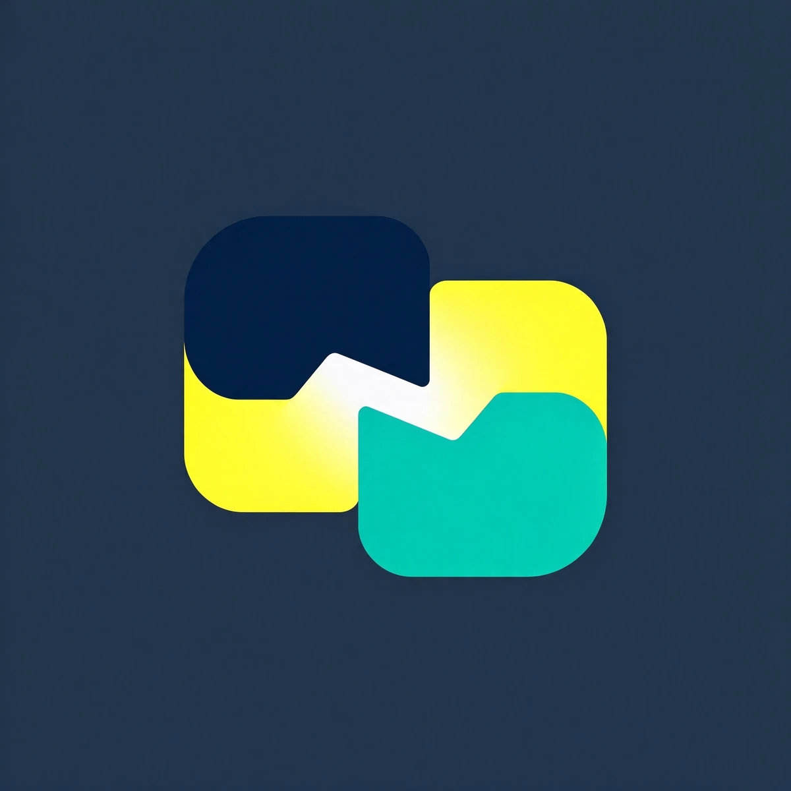

Windows

WKAITE REMOTE · 1.5.1.4
一套服务器，连接所有设备。
预配置远程桌面、键盘鼠标、剪贴板和文件传输。安装后自动连接自建服务器。
服务器：220.154.11.66
Ubuntu / Debian
Linux 桌面
macOS
Mac 桌面
Apple Silicon 适用于 M1/M2/M3/M4 等芯片；Intel 适用于 Intel 处理器的 Mac。
Android
手机和平板
更多 Linux 软件包
安装说明
Ubuntu 推荐离线 DEB，已内置键鼠控制所需依赖。Windows 未签名版本可能出现 SmartScreen 提示；macOS 未公证版本首次打开可能需要在“隐私与安全性”中允许；Android 安装时需要允许浏览器安装未知来源应用。
sudo dpkg -i WKAite-Remote-1.5.1.4-ubuntu-x86_64-offline.deb
sudo gtk-update-icon-cache -f -t /usr/share/icons/hicolor
Ubuntu 也可使用 sudo apt install -y ./文件名.deb 安装。全部安装包均已内置服务器地址和公钥。
安装后注销并重新登录一次，任务栏会刷新为新封面。